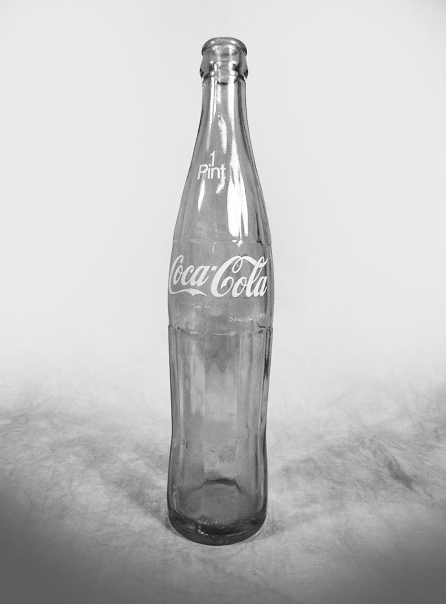

Coca-Cola entra nelle case
Per molti anni la bottiglia Coca-Cola era legata soprattutto al consumo individuale e ai piccoli formati. La diffusione dei frigoriferi domestici e il cambiamento delle abitudini di acquisto crearono però nuove opportunità per il consumo della bevanda direttamente a casa. Il packaging doveva quindi adattarsi a un contesto diverso, diventando più grande e adatto alla condivisione.
Nel 1955, la The Coca-Cola Company introdusse negli Stati Uniti i formati King Size e Family Size, segnando un importante cambiamento nella storia del packaging. La bottiglia Family Size da 26 once permetteva di portare a casa una quantità maggiore di prodotto, trasformando Coca-Cola da una bevanda principalmente acquistata e consumata fuori casa in una presenza sempre più abituale nelle occasioni domestiche.

1955, Stati Uniti.